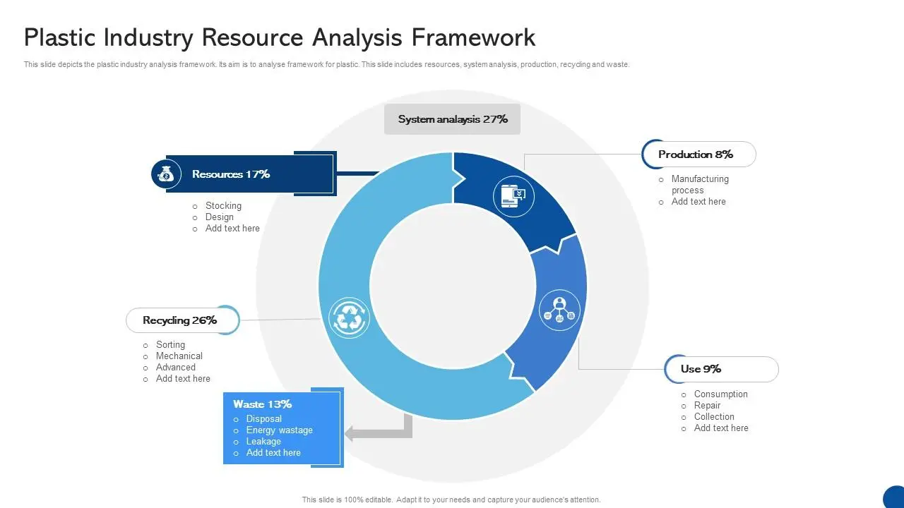

Resources Within Plastic Manufacturing Processes
Discover a comprehensive collection of external resources, articles, and publications related to production planning in plastic manufacturing. Our curated list is designed to support further learning and research on key topics such as injection molding, extrusion, CAD/CAM technologies, automation, and quality assurance systems. Whether you're seeking in-depth industry insights or exploring the latest advancements, our resource section serves as a gateway to valuable information that enhances your understanding of the intricate processes and technologies driving innovation in plastic manufacturing. Dive into a wealth of knowledge that empowers you to stay informed and inspired in this ever-evolving field.